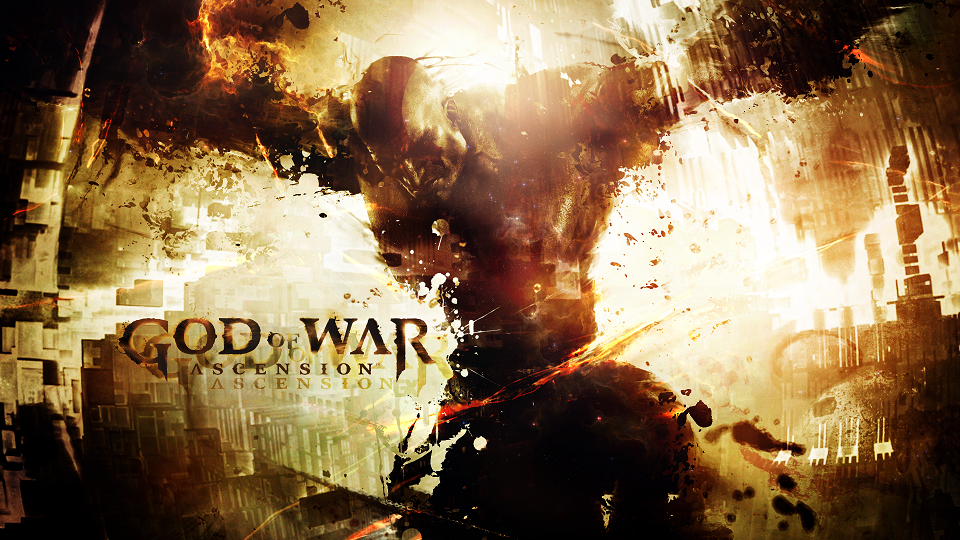
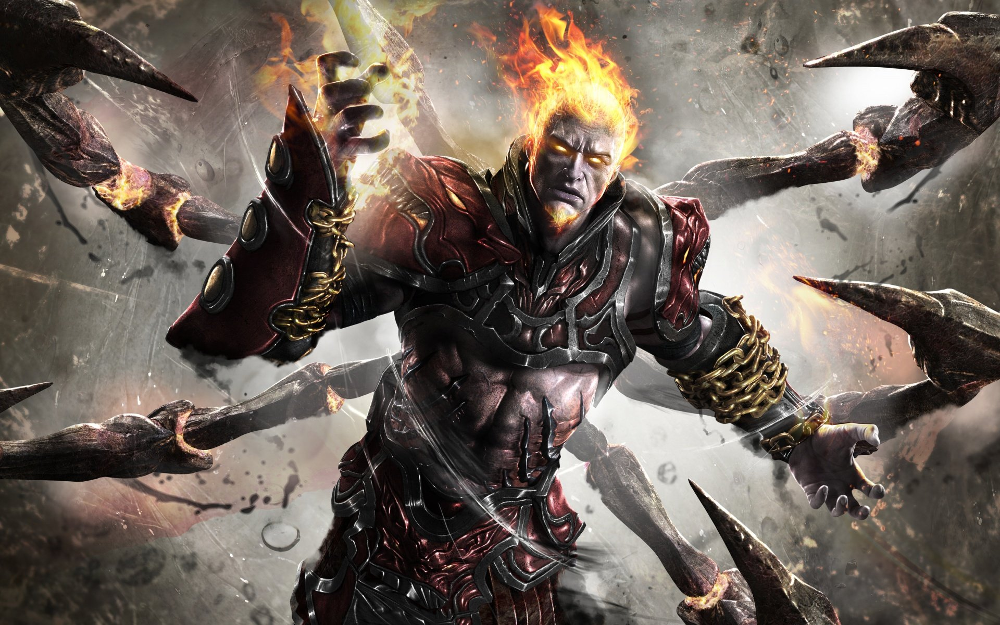

God of War (literalmente en español Dios de la Guerra) es una serie de videojuegos en 3.ª persona creada por SCE Santa Monica Studio y distribuida por Sony Computer Entertainment. Se basa en las aventuras de un semidiós espartano, Kratos, quién se enfrenta a diversos personajes de la mitología griega, tanto héroes (Heracles, Teseo, Perseo, etc.) y especies mitológicas (tales como gorgonas, arpías, o minotauros) como dioses griegos (Ares, Poseidón, Zeus, entre otros) y titanes (como Gaia y Cronos). Aunque el guerrero espartano acostumbra enemistad con la mayoría de los Dioses, recibe ayuda de muchos de ellos, en especial de Atenea. Los juegos están disponibles para las consolas PlayStation 2, PlayStation 3, PlayStation 4, PlayStation Portable, PlayStation Vita y también para teléfonos móviles. Se han realizado remasterizaciones de los primeros juegos para jugarse en consolas modernas, por lo cual hasta el día de hoy, seis de los siete God of War están disponibles para PS3, con la excepción de God of War: Betrayal.
La infancia de Kratos es explicada durante el desarrollo del primer juego. Es maltratado, como solía hacerse a los niños altos y fuertes en la Antigua Grecia. A su hermano, al tener una marca que el oráculo predijo la portaría el que causara la perdición del Olimpo, Ares lo secuestra y lo lleva al reino de la muerte. Luego de recibir entrenamiento, Kratos, ya casado y con una hija, Calíope, se convierte en un gran general del ejército espartano, a pesar de las advertencias de su esposa, el guerrero prometió no detenerse hasta que la gloria de Esparta estuviera en lo más alto. Las tácticas de sus ejércitos eran brutales, pero muy efectivas. Pero un día, un enfrentamiento contra el batallón de bárbaros dio un resultado adverso para su armada. Con su ejército destruido y a punto de ser asesinado por el líder bárbaro, Kratos pide la ayuda de Ares, el dios de la guerra, ofreciéndole su vida a cambio. El dios desciende de los cielos y acaba con todos los enemigos; luego entrega a Kratos las Espadas del Caos, que son adheridas a sus brazos por cadenas. El guerrero espartano sucumbe totalmente al poder de Ares, quien le exige ciertas tareas de destrucción y conquista. Las tácticas del ejército de Kratos son aún más brutales que antes, asesinando sanguinariamente a cualquiera que opusiera alguna mínima resistencia. En una de sus misiones, Kratos debía quemar una aldea que se oponía a la armada de Esparta. En su afán de sangre y gloria, Kratos quiso ingresar al templo de la aldea, el oráculo del pequeño pueblo le advierte que no debía entrar a aquel santuario. El guerrero la hace a un lado e ingresa, asesinando con sus espadas a todos los presentes. Cuando lanza por última vez sus espadas hacia sus víctimas, entiende que había asesinado a su esposa e hija. Kratos queda devastado y como castigo por tal acción y su brutalidad, Kratos tendría pegadas sobre su piel, las cenizas de su esposa e hija por la eternidad; aunque Ares le explica que hizo eso para convertirlo en el guerrero perfecto, aun así, el guerrero espartano renunció a seguir siendo el súbdito del dios de la guerra.
volver al indiceAl querer romper el pacto de sangre con Ares, las furias, encargadas de castigar a los que cometieran dicha acción, comenzaron a hacerle ver visiones a Kratos. Orkos, hijo de las furias, traiciona a sus madres y a su padre, Ares, al descubrir que planeaban destronar a Zeus del mandato del Olimpo, por lo que avisa al espartano del hechizo que sufría y que debía alcanzar el oráculo de Delfos para conocer la verdad. A pesar de los intentos de Pólux para que el oráculo muriera y no pudiera ver a Kratos, el guerrero logra descubrir su propósito antes que el oráculo falleciera. Este le avisa que solo encontrando los ojos de la verdad podía romper el encanto de las furias. Luego de alcanzar dicho elemento, las furias descubren a Orkos, quien ayudaba a Kratos e intentaba avisarle de la presencia de sus madres, y toman como prisionero al espartano, quien más adelante rompe las cadenas, logrando escapar. Las furias le ofrecen vivir en una ilusión en la que su hija y esposa estarían vivas junto con él, pero Kratos prefiere vivir la verdad y combate y asesina a las hermanas. Al regresar a su casa en Esparta, Orkos le avisa que no se liberó del pacto con Ares, ya que las furias lo habían convertido a él guardián de los pactos de sangre, por lo que le pide a Kratos de asesinarlo. A pesar de oponer resistencia, entiende que es lo mejor y le da al hijo de las furias una muerte honorable, como había pedido. Sin embargo, al romperse el lazo con el dios de la guerra, las visiones sobre su pasado, sobre los asesinatos a inocentes y a su familia y sobre sus brutales técnicas en el campo de batalla se vuelven algo cotidiano. Decide quemar su casa y dejar Esparta para redimirse por su pasado, sirviendo a los dioses, en busca de que estos eliminen las visiones que lo atormentan.
volver inicioKratos, siguiendo la palabra de los dioses, realiza todo tipo de tareas. Es enviado por los dioses a la costa de Ática para detener el avance de los persas. Tras parar el ataque, Kratos no tiene suficiente y reclama a los dioses más y más faenas, y es cuando ve que el Sol cae contra la Tierra, sumiendo el mundo en oscuridad. Se dirige hacia la zona de la colisión, cerca de la ciudad de Maratón. Al llegar, la ve envuelta por una niebla, de donde surgen enemigos y el Gran Carro del Helios, dios del Sol. Kratos se abre paso entre las diversas criaturas que invaden la ciudad y logra alcanzar el carro y, tras escalarlo, Atenea se presenta como una estatua y comunica a Kratos que Morfeo ha lanzado su manto y está sumiendo a los dioses en un profundo sueño. Sin un Sol que ilumine, Morfeo no tiene límites. Kratos tiene una nueva misión: devolver el Sol al cielo. Se adentra en el Templo de Helios (el carro) y, tras un corto camino, se topa con Eos, que comunica a Kratos que su hermano, Helios, había sido secuestrado por Atlas, que se encuentra en el Hades. Kratos se adentra en el Inframundo en busca de Atlas, pero allí ve a su fallecida hija, Calíope. Kratos sigue el rastro de ella y, finalmente, se topa con Perséfone, esposa de Hades y reina del Inframundo. Perséfone ofrece a Kratos la oportunidad de expiarse de sus pecados para descansar en paz con su hija. Kratos cede y pierde sus poderes a cambio de estar con su hija en los Campos Elíseos. Al fin, Kratos abraza a su querida hija, pero Perséfone agua el reencuentro porque ella era la verdadera artífice del plan para liberar a Atlas y éste, con los poderes del Sol en sus manos, destruiría el enorme pilar que sostiene la Tierra, y así acabaría con el Olimpo de una vez por todas, mientras los dioses duermen gracias a Morfeo. Kratos se da cuenta de su error, y decide, aunque sea muy doloroso, separarse de su hija y recobrar sus poderes de la única forma que sabe: matando a los muertos inocentes y siendo otra vez el fantasma de Esparta. Tras una encarnizada lucha contra Perséfone, el gran titán Atlas entra en la batalla, tratando de aplastar a Kratos. Después de encadenar los poderosos brazos del titán, se decide a terminar con Perséfone. Kratos logra terminar con ella, pero antes de irse, Atlas le dice que los olímpicos no le ayudarán. Kratos responde que los servirá fielmente. Atlas acaba la conversación diciendo que se volverán a ver. Atlas siempre sostendrá el mundo sobre sus hombros, un castigo peor que el que Zeus impuso a los otros titanes. Así es como Kratos retornó el Sol al cielo y Morfeo se retiró a las sombras. Finalmente, Kratos se lanza del carruaje, quedando inconsciente sobre la montaña más alta de toda Grecia, pagando un alto precio, incluso para el fantasma de Esparta.12
.PNG)
El primer videojuego de la saga comienza con el guerrero en un barco luchando contra la hidra por encargo del dios de los mares Poseidón. Previo a llegar a Esparta, Kratos sale a la cubierta en plena lluvia y le reprocha a Atenea que después de diez años de servicio, los dioses no habían cumplido lo prometido. La diosa le dice que aún faltaba una última misión: Ares estaba destruyendo Atenas, por lo que la diosa de dicha ciudad le pide a Kratos que detenga al dios de la guerra en su paso de destrucción ya que Zeus decretó que los dioses no podían luchar entre ellos. Kratos llega a Atenas luego de combatir con un gran número de soldados no muertos, gorgonas y minotauros, entre otros seres mitológicos. Luego de salvar al oráculo de Atenas de la muerte, Atenea le revela a Kratos que la única forma de que él pudiese asesinar a Ares era consiguiendo la caja de Pandora que se encontraba en el Templo de Pandora, encadenado a la espalda del titán Cronos en un inmenso desierto. El semidiós supera el desierto e ingresa en el templo, repleto de laberintos y enemigos. Finalmente consigue la caja, pero es asesinado por Ares (quien al enterarse que el espartano había cumplido su misión, lanza una gran estaca de piedra que le atraviesa el cuerpo). A pesar de ello, vuelve desde el Inframundo, llega donde estaba el dios de la guerra y, mientras este hacía notar su victoria a Zeus, aprovecha para quitarle la caja y abrirla. Al realizar esto, Kratos crece considerablemente y combate a Ares, a quien finalmente asesina. Pero después de su gran tarea, Atenea le admite que ningún héroe, guerrero o incluso dios podía olvidar lo que él había hecho. Totalmente desanimado, Kratos se lanza de la montaña más alta de toda Grecia con el fin de suicidarse, pero al caer al abismo no muere, sino que se levanta hasta el lugar donde se lanzó, allí Atenea le explica que si bien Ares está muerto, el puesto de dios de la guerra quedó vacante, por lo que le ofrece un puesto entre los dioses, como el nuevo dios de la guerra, Kratos acepta convirtiéndose en un miembro del Olimpo.
Tras los acontecimientos del primer God of War, Kratos está al frente de su ejército espartano con el objetivo de conquistar Grecia. Si bien lucha junto a sus guerreros, es atacado por un número de criaturas dirigidas por el gigante Argos, que es enviado por Hera para detener la guerra que Kratos está llevando a cabo. Sin embargo, antes de que Kratos pueda derrotar a la bestia, Argos es asesinado por un desconocido, en un esfuerzo para destruir la reputación del antihéroe ante los dioses del Olimpo. Kratos lo persigue a través de Grecia con el fin de descubrir la identidad del líder del asesino, que está tratando de poner a los dioses en su contra. Sin embargo, el hijo de Hermes, Cérix, es enviado a entregar un mensaje a Kratos de parte de Zeus, que está cada vez más preocupado con la cantidad de destrucción que Kratos deja detrás de sí. Cérix ordena detenerse a Kratos, pero el dios de la guerra se niega e inicia una gran batalla contra el mensajero. Aprovechando la situación, el asesino se escapa. Kratos mata a Cérix y los soldados espartanos lo celebran, pero al observar el cuerpo del dios muerto se da cuenta de que Zeus tomará medidas de este acto de rebeldía.
Ya como dios de la guerra, Kratos sufre una visión en la que su madre le exigía ayuda desde Atlantis. A pesar de los avisos de Atenea de que lo que vio era simplemente un sueño, Kratos dirige una flota a la ciudad. Allí se encuentra con su madre, quien le revela la verdadera identidad de su padre y de su hermano Deimos. Al hacer esto, Calisto, su madre se convierte en un horripilante monstruo al que Kratos se ve obligado a matar. Junto con sus otras batallas en Atlantis, genera la destrucción total de dicha ciudad, siendo expulsado a la isla de Creta. Vuelve posteriormente a Esparta para poder llegar al Inframundo, donde encuentra a Deimos en los dominios de Tánatos, siendo torturado. Su hermano lo culpa de no haberlo defendido el día de su desaparición y lo enfrenta. La batalla es ganada por Deimos, pero Tánatos interviene e intenta matarlo, a pesar de que Kratos llega a tiempo para evitarlo, el dios de la muerte termina asesinando a su hermano enfrente del dios de la guerra, quien enfurece totalmente y asesina a Tánatos. En su regreso, Atenea le revela que está listo para ser un dios. Sin embargo, Kratos jura venganza hacia los dioses.
volver inicioUn general espartano invoca a Kratos para lograr la tan ansiada "gloria de Esparta" que este había anhelado por años, el dios de la guerra desciende del monte Olimpo, a pesar del intento de Atenea de detenerlo, a la ciudad de Rodas y comienza a destruir todo a su paso, pero un águila se apoya sobre él y comienza a empequeñecerlo hasta devolverlo a su tamaño normal. Luego, el águila se coloca sobre el coloso de Rodas y le da vida con la energía robada a Kratos. El espartano cree que ha sido Atenea. Zeus le entrega ayuda a Kratos, ofreciéndole la espada del Olimpo, con la que el rey de los dioses había acabado la gran guerra de dioses y titanes. Pero cuando Kratos trata de quitarla, comienza a perder, sin saberlo, sus poderes divinos. Al fin, quita la espada del suelo y termina con el coloso de Rodas. Pero cuando clamaba mirando al cielo dirigiéndose a su padre, la mano del coloso lo impacta accidentalmente y lo daña de gravedad, destruyendo su armadura y dejándolo muy débil. Zeus muestra que era él esa águila que había robado los poderes de Kratos para dárselos al coloso. Zeus entendía que Kratos, su hijo más poderoso, intentaría acabar con él, como ocurría en la mitología griega, así que decide matarlo. Ya en el Inframundo, Gaia, la titánide, se presenta ante Kratos junto con los demás titanes y le ofrece ayuda a cambio que él destrone a Zeus del Olimpo. Kratos acepta, sale del Inframundo y comienza su viaje a la isla de la Creación en busca de las hermanas del destino, para poder volver al pasado en el momento en que Zeus lo traicionó. En la isla, Kratos asesina a Teseo, Ícaro, Perseo, Euríale, el Kraken y el jefe bárbaro con el que Kratos había acabado cuando Ares acudió en su ayuda. Finalmente, se encuentra con las hermanas del destino y las asesina a las tres, pudiendo volver al pasado en el momento de la traición de Zeus. Vuelve, se enfrenta a él y lo vence, pero al momento de asesinarlo, Atenea se cruza y sacrifica su vida, para evitar la muerte de Zeus, permitiéndole al dios del trueno escapar. Atenea justifica su acción con el pretexto de que Kratos, al asesinar a Zeus acabaría con todo el Olimpo, pero Kratos le dice que si el Olimpo se opone a su venganza, entonces el Olimpo también sucumbirá. Atenea entonces le confiesa a Kratos que no puede asesinar a Zeus, dado que se repetiría de este modo el ciclo del hijo mata al padre, dándole a entender a Kratos que Zeus es su padre. Tras esto, Atenea muere. Enfurecido, Kratos regresa a la cámara de las hermanas del destino para volver nuevamente al pasado, al momento de la gran guerra entre titanes y dioses, y se lleva consigo a todos los titanes a la época del presente para poder formular su tan ansiada venganza. En el final del juego, Kratos está sobre Gaia, y ésta, con los demás titanes, están escalando el monte Olimpo en busca de asesinar a todos sus miembros, pero Zeus no le teme y prepara a los dioses para la batalla final.
.jpg)
En la guerra entre titanes y dioses Kratos, con ayuda de Gaia, comienza su venganza contra los dioses asesinando brutalmente a Poseidón. Luego cuando se encuentra con Zeus, este arroja al guerrero y a Gaia a un abismo, la titánide traiciona a Kratos para poder salvarse y deja que este caiga en el río de las almas en el Inframundo, el cual lo debilita. A la salida de dicho río se encuentra con el fantasma de Atenea quien le ofrece sus consejos, las Espadas del Exilio y decide ayudarlo a matar a Zeus. En su camino se encuentra con una estatua que lo llama "padre". Él, esperanzado con que sea Calíope, su hija, se apresura a responder, para entender que era otra niña, Pandora, lo que descubre luego. Luego hace un encuentro con Hades y lo asesina, consiguiendo las preciadas garras de Hades. Luego de la matanza del dios del Inframundo, Kratos se encuentra con Hefesto, quien le da ciertos consejos y le revela verdades sobre su pasado y el de su hija. Kratos sigue su camino hacia Zeus, llega a la ciudad de Olimpia, donde encuentra a Gaia apenas sostenida. No escucha los pedidos de ayuda de la titánide y le corta la mano (con la espada del Olimpo) para arrojarla al vacío. Ya en la ciudad, acaba con Helios para obtener su cabeza. Luego el guerrero espartano se cruza con Hermes, a quien mata para poder robarle sus botas. Se enfrenta y asesina igualmente a su hermanastro Heracles, (también conocido como Hércules) consiguiendo así los Cestus de Nemea. Llega a las fosas de Tártaro y se enfrenta en una cruenta lucha al titán Cronos, quien cree haber acabado con el espartano al habérselo tragado, pero este le abre un agujero en su estómago que lo debilita, para luego clavar la espada del Olimpo en su frente. Después se encuentra en los jardines superiores. Allí tiene una discusión con Hera, a quien termina matando por burlarse de Pandora. Kratos supera el laberinto de Dédalo y destruye a los tres jueces para poder acceder a la llama del Olimpo. Al llegar a ella, Pandora se intenta sacrificar pero Kratos la detiene, cuando ella lo hace entrar en razón y se decide a dirigirse a la llama del Olimpo para así poder apagarla y que Kratos pueda abrir la caja , aparece Zeus, quien pelea con Kratos (cuya distracción provoca que Pandora logre su cometido) en tres ocasiones. Tras el sacrificio de Pandora Kratos abre la caja y se da con la sorpresa que la caja se encontraba vacia. En el final de la segunda batalla, aparece la titánide Gaia, quien intenta acabar con ambos, pero tanto Kratos como Zeus logran escapar al interior de Gaia, donde tiene lugar la tercera y última batalla. Kratos asesina a Gaia y cree asesinar al padre de los dioses, que luego emerge de los escombros para matar al espartano. Kratos se refugia en su mente, donde se presentan los viejos y malignos recuerdos que lo atormentan, pero allí aparece Pandora y lo ayuda a perdonarse a sí mismo por todas las cosas malas que hizo en el pasado, liberando el poder de la esperanza que había permanecido oculto en él. Después de eso, Kratos vuelve a la realidad y finaliza su venganza, asesinando violentamente a Zeus. Luego, Kratos se queda contemplando cómo quedó el mundo, cuando de pronto aparece Atenea exigiéndole el poder de la esperanza, que había usado para matar a Zeus, pero Kratos se niega y desenfunda la espada del Olimpo, Atenea se queja al espartano de querer asesinarla de nuevo, pero Kratos no mata a la diosa, sino que atraviesa la espada en su propio cuerpo, liberando la esperanza por todo el mundo. Al final, se puede apreciar que el cuerpo de Kratos no está, pero hay un rastro de sangre que apunta hacia el vacío y al mundo devastado por la muerte de los dioses.
volver inicioHan pasado muchos años. Kratos vive ahora en las tierras nórdicas, muy lejos de Grecia. Aunque su vida ha permanecido muy tranquila, esta ha dado un cambio con la muerte de Faye, una mujer que conoció y con la que tuvo a Atreus. Tras quemar su cuerpo, y ser descubiertos por Baldur, un dios demente que busca al dios espartano, ambos deciden partir y cumplir el deseo de Faye, que es que sus cenizas sean esparcidas en el punto más alto de los Nueve Reinos.
volver inicioEl orden de los juegos no está estipulado por su orden de salida al mercado, sino que cada uno cubre una parte de la historia independientemente de cuando salió a la venta.
volver inicioPosteriormente a la salida al mercado de PlayStation 3, ha habido varias compilaciones, para PS3, que integran los juegos que salieron originalmente para otras consolas.
volver inicioSu lanzamiento fue el 19 de noviembre de 2009 en Norteamérica y el 28 de abril de 2010 en Europa. Es una compilación de los dos God of War que salieron para PlayStation 2, God of War I y II, además, incluye una demo de God of War III
volver inicioSu lanzamiento fue el 13 de septiembre de 2011 en Norteamérica y el 16 del mismo mes en Europa. Incluye las dos ediciones de PSP, Chains of Olympus y Ghost of Sparta. Tiene la opción 3D y definición de hasta 1080p.
volver inicioFue lanzado el 28 de agosto de 2012 y desarrollado por SCE Santa Monica Studio, Bluepoint Games y Ready at Dawn Studios, además de tener incluido treinta días (un mes) de acceso a PlayStation Plus. Consta de dos Blu-Ray y un código para descargar la versión digital de los dos juegos de PSP. Es una recopilación de los juegos salidos hasta 2012 (I, II, III, Chains of Olympus y Ghost of Sparta).
volver inicioSu salida al mercado se produjo en noviembre de 2012. Incluye God of War: Collection, Origins Collection, III y God of War Ascension, además de una estatuilla de Kratos.3 Este pack está disponible solamente en América.
volver inicioEl juego se presenta en 3.ª persona, con un innovador sistema de ataque que se basa en dos espadas que Kratos lanza de sus manos pero que están detenidas por cadenas que las conectan al espartano. Además, en cada edición del juego se presentan distintos y novedosos poderes mágicos entregados por diversos Dioses o Titanes, que acostumbran ser cinco o seis (excepto en God of War: Betrayal, en el que los tres poderes están sacados del primer God of War). En el God of War III se formuló un nuevo sistema que acompañó al de los poderes mágicos, el de los objetos. No gastan magia, sino una barra especial amarilla que se recarga sola rápidamente si esta en desuso. Los combos son otro factor importante, al presionar una serie de botones en un orden determinado, Kratos realizará ataques más espectaculares y dañinos contra sus enemigos. La cantidad de combos se expandió mucho desde el primer God of War hasta el Ascension. En la parte izquierda superior de la pantalla se encuentra una espada con la cantidad de vida, magia, orbes rojos y, en el God of War III, la barra amarilla de los objetos. Estos comienzan con un límite considerable y a medida que Kratos junta ojos de Gorgona, plumas de Fénix y cuernos de Minotauro podrá extender los límites de vida, magia y objetos. Asesinando enemigos se consiguen los orbes rojos, necesarios para subir de nivel las armas y poderes para poder realizar más combos y aumentar el daño de los mismos. Los juegos, a parte de lo combates, poseen muchos acertijos y rompecabezas. En el primer God of War se destacaban más los primeros. Esto fue modificándose en los juegos subsiguientes, agregándose cofres secretos en determinados lados que otorgan grandes premios a quien los encontrase. También en los juegos se aprecia la existencia de Quick Time Events, distintas cinemáticas interactivas en donde el jugador debe presionar botones específicos mostrados en pantalla. Si el jugador se equivoca en presionar, o se tarda demasiado en responder, fallará y deberá repetir nuevamente la secuencia, en cambio si la efectúa correctamente, producirá gran daño, la eliminación del jefe o enemigo atacado o el avance en segmentos específicos del trayecto.
volver inicioLa mayoría de los juegos fueron recibidos de manera muy positiva, Gamerankings dio calificaciones siempre superiores a 904567(excepto en God of War: Ghost of Sparta8). Metacritic recibió cada juego de manera muy similar,9101112siendo el Ghost of Sparta el único God of War que no supero los 90.13Los usuarios de esta página calificaron con un 86 a dicho juego.13Demostrando que fue el juego que más decepcionó a los seguidores de la serie. El juego para teléfonos móviles, God of War: Betrayal, fue igualmente bien recibido por la crítica en general, ya que ofrecía combates muy atrayentes mezclados con acertijos y puzzles , lo que caracteriza a la saga
volver inicioKratos y la temática de la saga se presentan en diversos juegos de Sony Computer Entertainment, entre ellos están LittleBigPlanet,14 Hot Shots Golf: Out of Bounds,15ModNation Racers,16 y PlayStation All-Stars Battle Royale.[cita requerida] Pero no sólo videojuegos de Sony, en Mortal Kombat Kratos es un luchador exclusivo de PlayStation 3; posee ataques y combos muy realistas que se asemejan mucho al Kratos de God of War III. Además de Soulcalibur: Broken Destiny
volver inicioA través de filtraciones de un artwork para un tentativo reinicio de la franquicia, se empezó a especular respecto a un nuevo videojuego que cambiaría totalmente el escenario y las deidades involucradas del juego. Posteriormente en el E3 de 2016 SCE Santa Monica Studio sorprendió gratamente a todos con su tráiler para el nuevo juego: God of War. Este juego hizo las veces de secuela y reinicio de la saga (algo similar a lo ocurrido con Resident Evil 4, con el cambio a la acción y nuevamente con la séptima entrega volviendo a sus orígenes del survival horror). Este nuevo juego continúa la historia protagonizada por Kratos, presentando como escenario un ambiente totalmente distinto al de la antigua Grecia. Este juego ubica a Kratos en las tierras nórdicas de escandinavia (lo que los vikingos llamarían Midgard), regida por los dioses del Asgard. No solo el personaje sino su parafernalia cambia bastante. Sus espadas del caos han sido reemplazadas por un hacha, se lo ve con una larga barba que lo acerca a la estética de un vikingo, su carácter se ha serenado bastante, y va a acompañado de su hijo , Atreus. El juego se estrenó el 20 de abril de 2018, en exclusiva para la consola PlayStation 4.
volver inicio